Lab6:综合实验
1 实验准备¶
1.1 文件结构¶
.
├── Makefile
├── ip
│ ├── include
│ │ ├── cosim
│ │ │ ├── cj.h
│ │ │ ├── magic_device.h
│ │ │ ├── magic_type.h
│ │ │ ├── masker_enum.h
│ │ │ ├── masker_insn_fields.h
│ │ │ └── morpher.h
│ │ ├── fesvr
│ │ │ ├── byteorder.h
│ │ │ ├── config.h
│ │ │ ├── context.h
│ │ │ ├── device.h
│ │ │ ├── dtm.h
│ │ │ ├── elf.h
│ │ │ ├── elfloader.h
│ │ │ ├── htif.h
│ │ │ ├── htif_hexwriter.h
│ │ │ ├── htif_pthread.h
│ │ │ ├── memif.h
│ │ │ ├── option_parser.h
│ │ │ ├── rfb.h
│ │ │ ├── syscall.h
│ │ │ ├── term.h
│ │ │ └── tsi.h
│ │ ├── riscv
│ │ │ ├── abstract_device.h
│ │ │ ├── abstract_interrupt_controller.h
│ │ │ ├── cachesim.h
│ │ │ ├── cfg.h
│ │ │ ├── common.h
│ │ │ ├── csrs.h
│ │ │ ├── debug_module.h
│ │ │ ├── debug_rom_defines.h
│ │ │ ├── decode.h
│ │ │ ├── devices.h
│ │ │ ├── disasm.h
│ │ │ ├── encoding.h
│ │ │ ├── entropy_source.h
│ │ │ ├── extension.h
│ │ │ ├── isa_parser.h
│ │ │ ├── log_file.h
│ │ │ ├── memtracer.h
│ │ │ ├── mmio_plugin.h
│ │ │ ├── mmu.h
│ │ │ ├── platform.h
│ │ │ ├── processor.h
│ │ │ ├── rocc.h
│ │ │ ├── sim.h
│ │ │ ├── simif.h
│ │ │ ├── trap.h
│ │ │ ├── triggers.h
│ │ │ └── vector_unit.h
│ │ └── softfloat
│ │ ├── internals.h
│ │ ├── platform.h
│ │ ├── primitiveTypes.h
│ │ ├── primitives.h
│ │ ├── softfloat.h
│ │ ├── softfloat_types.h
│ │ └── specialize.h
│ └── lib
│ ├── libcontroller.a
│ ├── libcosim.a
│ ├── libdisasm.a
│ ├── libfdt.a
│ ├── libfesvr.a
│ ├── libriscv.a
│ ├── libsoftfloat.a
│ ├── libspike_dasm.a
│ └── libspike_main.a
├── sim
│ ├── Axi_lite_DDR.sv
│ ├── cosim.v
│ ├── dpi.cpp
│ └── testbench.sv
├── submit
│ ├── ALU.v
│ ├── ALUop.vh
│ ├── Axi_interface.sv
│ ├── Axi_lite_Core.sv
│ ├── Axi_lite_Displayer.sv
│ ├── Axi_lite_Hub.sv
│ ├── Axi_lite_RAM.sv
│ ├── Axi_lite_Timer.sv
│ ├── Axi_lite_Uart.sv
│ ├── BranchComp.v
│ ├── CSRModule.sv
│ ├── CSRStruct.vh
│ ├── Core.sv
│ ├── Core2MMIO_FSM.v
│ ├── Core2Mem_FSM.v
│ ├── CoreAxi_lite.sv
│ ├── Cosim_MMIO.sv
│ ├── DIsplayer.sv
│ ├── DataTrunc.v
│ ├── Decoder.v
│ ├── Define.vh
│ ├── EXEMEM.v
│ ├── ExceptReg.sv
│ ├── ExceptStruct.vh
│ ├── IDEXE.v
│ ├── IDExceptExamine.sv
│ ├── IFID.v
│ ├── ImmGen.v
│ ├── InstExamine.sv
│ ├── MEMWB.v
│ ├── MMIOStruct.vh
│ ├── MUX.v
│ ├── MaskGen.v
│ ├── MemAxi_lite.sv
│ ├── Memmap.v
│ ├── Opcodes.vh
│ ├── PipelineCPU.sv
│ ├── RAM.sv
│ ├── RaceController.v
│ ├── Racecontrol_Axi.v
│ ├── RegStruct.vh
│ ├── Regs.sv
│ ├── Timer.sv
│ ├── controller.sv
│ ├── forwarding.v
│ └── uart.sv
├── syn
│ ├── Axi_lite_DDR.sv
│ ├── Axi_lite_DDR_sim.sv
│ ├── DDR_Ctrl.sv
│ ├── DebugModule.sv
│ ├── DebugStruct.vh
│ ├── VRAM.v
│ ├── font_table.v
│ ├── io.sv
│ ├── mig.ucf
│ ├── mig_a.prj
│ ├── top.sv
│ ├── top.xdc
│ └── vram.hex
├── tcl
│ └── vivado.tcl
└── testcode
├── Makefile
├── bootload
│ ├── Makefile
│ ├── bootload.S
│ ├── link.ld
│ ├── load_binary.c
│ └── load_binary.h
├── compress_elf.py
├── dummy
│ └── dummy.hex
├── endian.py
├── kernel
│ ├── Makefile
│ ├── arch
│ │ └── riscv
│ │ ├── Makefile
│ │ ├── include
│ │ │ ├── clock.h
│ │ │ ├── defs.h
│ │ │ ├── mm.h
│ │ │ ├── proc.h
│ │ │ └── sbi.h
│ │ └── kernel
│ │ ├── Makefile
│ │ ├── clock.c
│ │ ├── entry.S
│ │ ├── head.S
│ │ ├── mm.c
│ │ ├── proc.c
│ │ ├── sbi.c
│ │ ├── trap.c
│ │ └── vmlinux.lds
│ ├── include
│ │ ├── math.h
│ │ ├── printk.h
│ │ ├── rand.h
│ │ ├── stddef.h
│ │ ├── string.h
│ │ └── types.h
│ ├── init
│ │ ├── Makefile
│ │ ├── main.c
│ │ └── test.c
│ └── lib
│ ├── Makefile
│ ├── math.c
│ ├── printk.c
│ ├── rand.c
│ └── string.c
├── link.ld
├── mini_sbi
│ ├── Makefile
│ ├── def.h
│ ├── mcsr.h
│ ├── sbi_entry.S
│ ├── sbi_head.S
│ ├── sbi_trap.c
│ ├── sbi_trap.h
│ └── uart.c
├── rom
│ ├── Makefile
│ ├── link.ld
│ └── rom.S
└── testcase.ld
1.2 环境配置¶
1.2.1 修改软件¶
按照实验指导和报错修改软件，去掉 sbi_console_putchar() 和 sbi_console_getchar() 避免重复定义，在 vmlinux.lds 中添加 global 变量 _end，在 head.S 中调 ecall
1.2.2 安装 riscv-unknown-elf-gcc¶
1.2.3 修改 Makefile¶
将 Makefile 中的 march=rv64i-zicsr 改为 march=rv64imafd
1.2.4 再修改 Makefile¶
挂第一条了，观察波形发现 difftest 和 dut 显示的其实是一样的，和 rom.hex 里的也一样。然后发现是编码问题，/rom 下的 Makefile 忘记改了（）
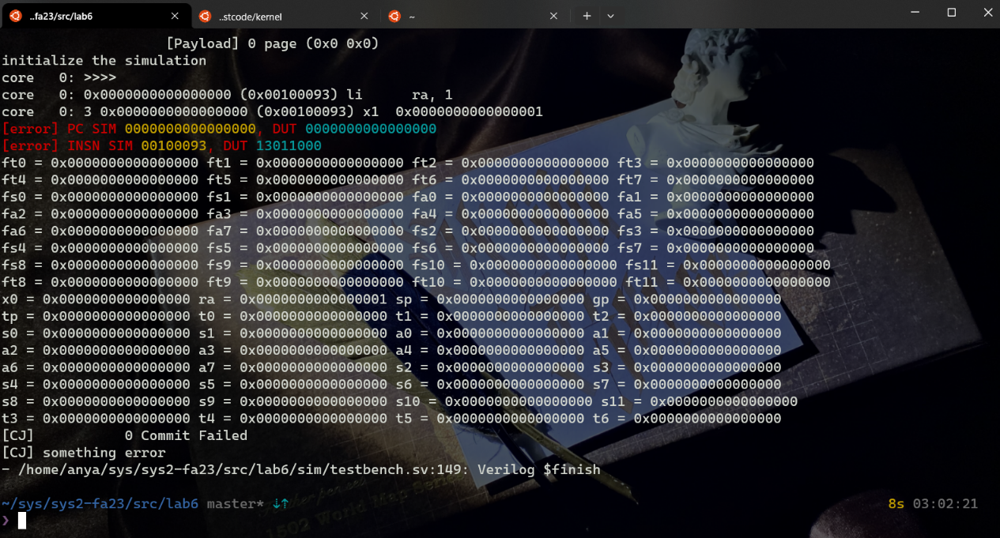
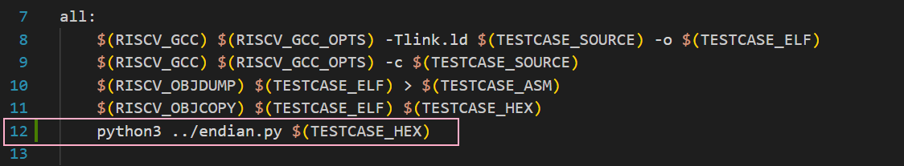
修改完就可以跑到 csr 指令所在的地方了
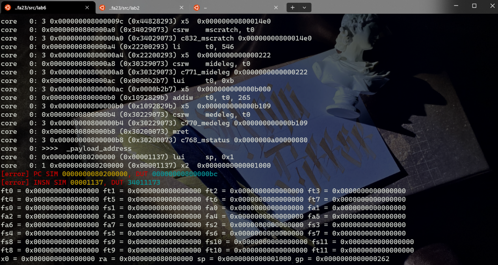
2 实验步骤¶
2.1 CSR 相关指令以及 CSRModule¶
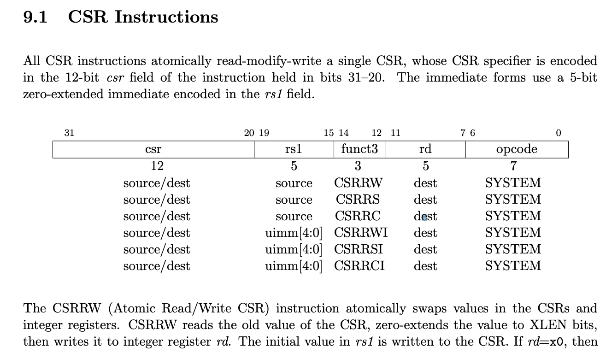 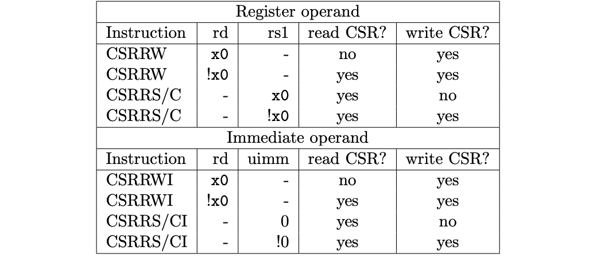 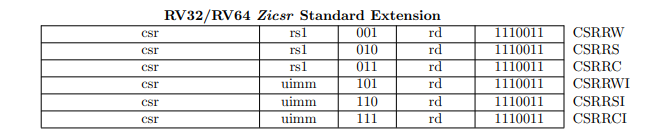 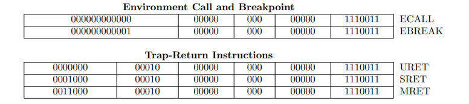
在 decoder 中添加对 csr 指令的解码 (btw 对上学期拿二进制写 decoder 的自己表示谴责。)
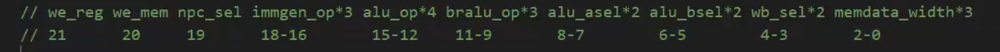
7'b1110011: begin
case(inst[14:12])
3'b000: decode = 22'b00_1000_0000_0000_0000_0000; // ecall ebreak mret sret
3'b001: decode = 22'b10_0000_0000_0000_1000_1000; // csrrw
3'b010: decode = 22'b10_0000_0000_0000_1000_1000; // csrrs
3'b011: decode = 22'b10_0000_0000_0000_1000_1000; // csrrc
3'b101: decode = 22'b10_0111_0000_0000_0100_1000; // csrrwi
3'b110: decode = 22'b10_0111_0000_0000_0100_1000; // csrrsi
3'b111: decode = 22'b10_0111_0000_0000_0100_1000; // csrrci
default: decode = 22'b0;
endcase
end
修改 regfile 和 CSRModule 里的接口，使得读写 CSR 和读写 Regs 的操作合理
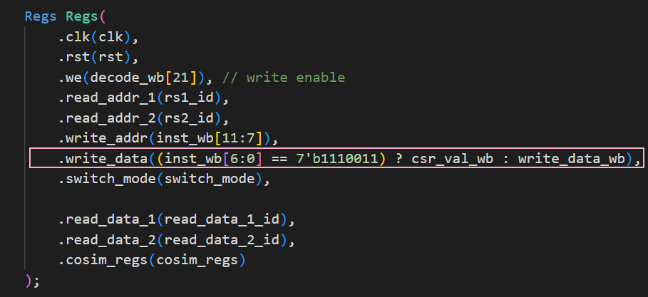
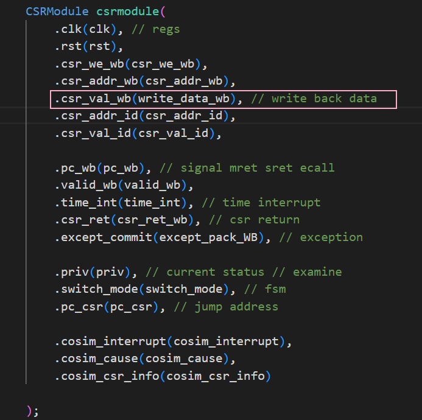
写寄存器成功
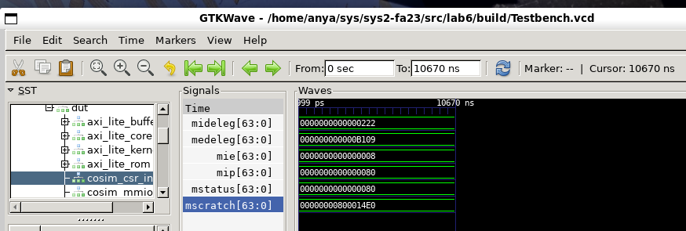
这些修改过后，可以成功运行读写 csr 寄存器的指令，跑到 mret
查看所有的 pc 相关信息，发现 csr 相关的所有了 pc 值都是正确的，但是 pc 没有正确更新。在 pc 更新处加一个选择即可
always @(posedge clk) begin // 上升沿更新
if (rst) pc_if_reg <= 64'b0; // reset pc
else if (switch_mode) pc_if_reg <= pc_csr;
else if (~stall_PC) pc_if_reg <= npc_if; // update pc
end
assign pc_if = pc_if_reg;
2.2 处理异常和中断¶
在添加一个 InstExceptExamine 模块，并且把异常信息一拍一拍传下去之后，将 WB 阶段的异常信息传给 CSRModule，得到 switchmode 信号。
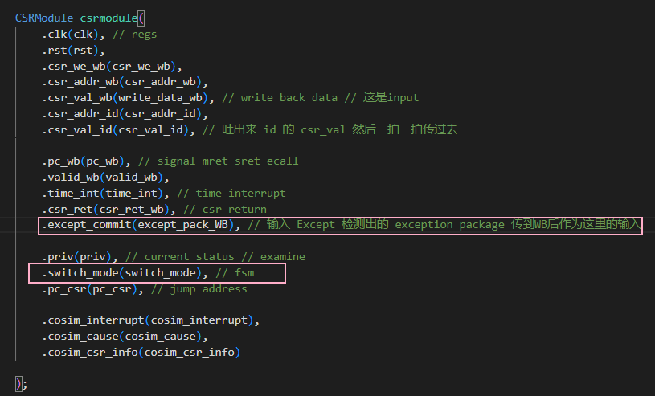
2.2.1 修改 RaceControl¶
将原先的 jump 信号改为 jump_new = jump | switch_mode 即可
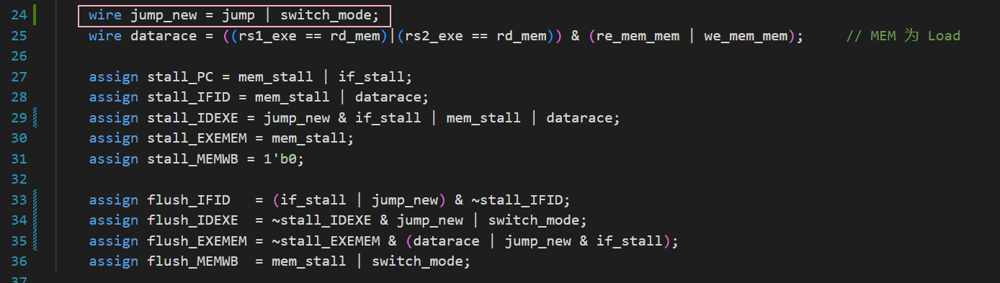
2.2.2 修改 FSM¶
基本逻辑仍然没有改变：
| 起始状态 | 目标状态 | 条件 | 任务 |
|---|---|---|---|
| IDLE | DATA | wen_cpu | ren_cpu (MEM请求) | mem_stall 信号和 if_stall 信号 |
| IDLE | INST | MEM阶段未发送请求， IF 阶段发送请求 | 发送 IF 请求信息给 CoreAxi_lite ，开启 if_stall 信号 |
| DATA | DATA | CoreAxi_lite 未返回 valid 信号 | 等待，保持 mem_stall 和 if_stall 信号 |
| DATA | IDLE | CoreAxi_lite 返回 valid 信号 | 关闭 mem_stall 信号，关闭给 CoreAxi_lite 的请求 |
| DATA | INST | 不会发生 | 不会发生 |
| INST | INST | CoreAxi_lite 未返回 valid 信号 | 等待，保持 if_stall 信号 |
| INST | IDLE | CoreAxi_lite 返回 valid 信号 | 关闭 if_stall 信号，关闭给 CoreAxi_lite 的请求 |
| INST | DATA | 不会发生 | 不会发生 |
在状态机为取指令阶段时添加一条判断，如果 switch_mode 信号为 1，那么多 stall 一拍
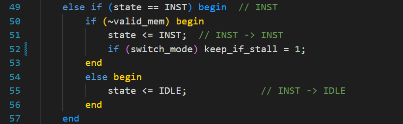
当状态为非空闲状态，并且 if_keep_stall 为 1 时，if_stall 设置成 1，Core 的 pc 不更新。
2.3 优化代码¶
把重复的接线定义成新的 wire 增强可读性，统一代码风格和位置等，修改有些寄存器的 reg/wire 类型，顺利通过综合。
2.4 仿真行为¶
2.4.1 make board sim¶
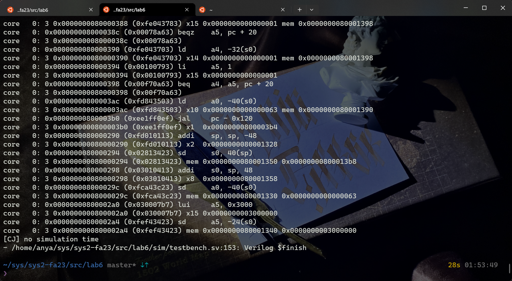
2.4.2 make 2>log¶
满足秒数递减和进程切换的 log
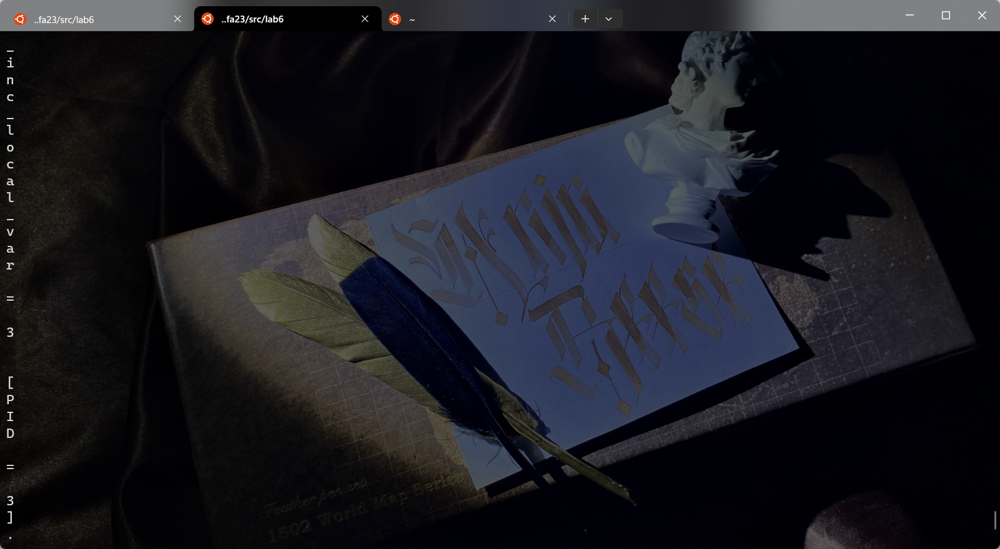
2.4.3 上板验证¶
大约1s进行一次时钟中断，当 switch 7-0 的值是 01000000 的时候，LED 灯就会输出 Displayer 的移位寄存器的结果，于是我们就可以观察到 kernel 打印出来的 log，从而判断是否正确。通过验收。
3 思考题¶
1.使用 putc 函数输出一个字符 'a' 前后需要发生几次特权态切换，请将切换的状态和切换的原因一一列举出来。
2次。
第一次是 ecall 触发异常，从 S 态到 M 态，第二次调用 sbi_console_putchar 后 mret ，从 M 态到 S 态。
2.如果流水线的 IF、ID、MEM 阶段都检测到了异常发生，应该选择那个流水级的异常作为 trap_handler 处理的异常？请说说为什么这么选择。 选择 MEM 阶段的指令。在我设计的 CSRCPU 中，只调用了一次异常检测模块，并且将信息一路传递到 WB 阶段，传递到 WB 阶段的指令有异常时，racecontrol 会把 IDEXE 阶段的指令 stall 住，并且 flush 掉几个阶段的指令，所以应该选择最早出现的异常。
3.CSR 寄存器的读写操作如 csrrw、csrrwi 会不会引入新的 stall？如果会，在你的实现中引入了哪些 stall？可以用 forward 技术来减少这部分 stall 吗？ 会引入新的 stall。在我的实现中，CSRModule 和 Regsfile 是同一级关系，和 Regs 共用一个 stall。可以用 forward 技术来减少这一部分 stall，可以专门设置一个 CSRHandler，csr 这些指令并没有复杂的运算，所以没有必要和普通指令一样经过很多个 EXE 以及 MEM 的模块传到 WB。
4.可以为系统 II 的课改留下任何宝贵的心得体会和建议吗？（不记录分数，纯属用于吐槽） 开学的时候最焦虑的事情就是万一 lab1 写不出来，之后所有的 lab 都会挂、、、无从下手和卡 bug 的时候也真的很焦虑和绝望，不过静下心来去理解也会发现其实没有想象中那么恐怖（还是挺恐怖的）。这么多文件真是辛苦助教了、、、